Non-payment of tax: NBR freezes bank accounts of 12 pvt univs
The bank accounts of at least 12 private universities have been frozen for not following the National Board of Revenue’s instruction to pay 15 percent income tax.
Search the full archive by keyword, format, beat, year and byline status.
The bank accounts of at least 12 private universities have been frozen for not following the National Board of Revenue’s instruction to pay 15 percent income tax.
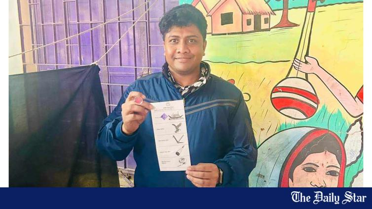
The Bangladesh Chhatra League president of Dhaka University unit today posted a photo of himself holding a ballot paper displaying his vote on his social media account
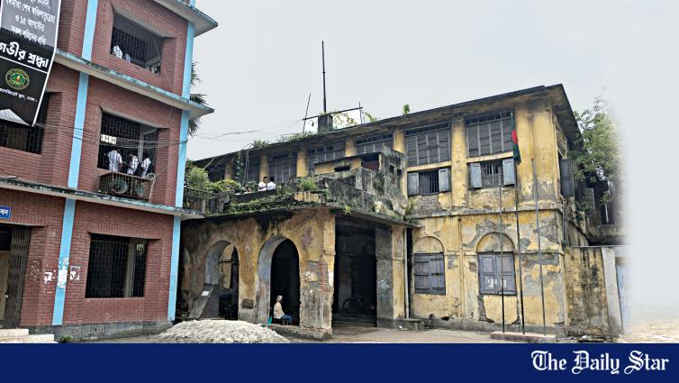
In 400-year-old Dhaka, a few educational institutes have stood the test of time. These century-old schools have played a significant role in shaping the education and culture of the city and beyond and have produced notable individuals who have left their mark on the national and world stages.
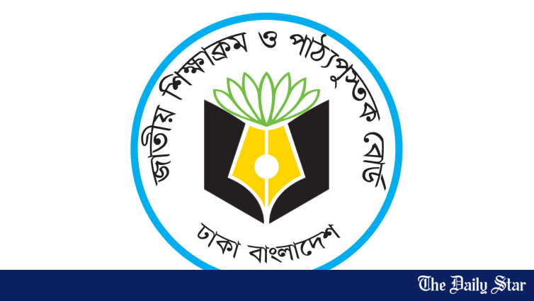
The government has decided to remove any “exaggerated” historical information or “unnecessary” glorification of any individuals from textbooks for the upcoming academic year, officials of the National Curriculum and Textbook Board (NCTB) have said.
With the national election just 18 days away, political parties are finalising their manifestos. The Daily Star spoke to experts to identify the pressing issues that should top the agenda for parties.
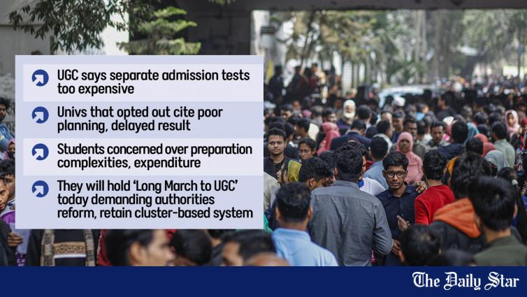
Admission seekers are set to face increased hassle with at least 10 public universities no longer participating in the cluster-based admission test system. They are holding entrance exams on their own.
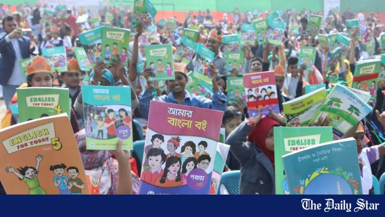
As the government aims to raise the country’s literacy rate to between 86 and 90 percent by 2030, nearly half of children aged seven to 14 still fail to read and understand a simple story.
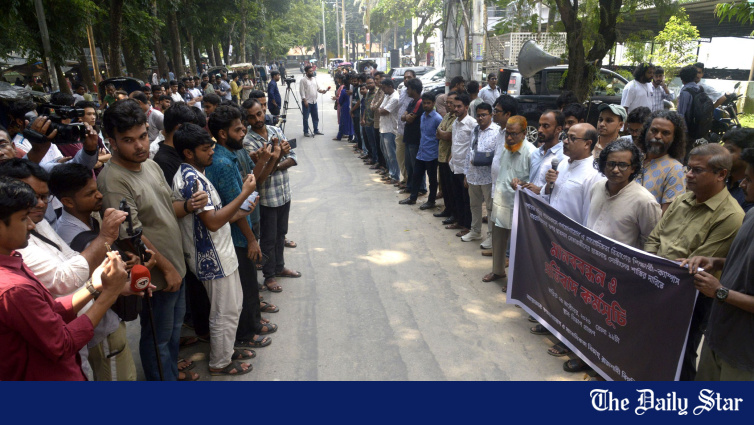
During the Awami League’s three consecutive terms in office over a decade and a half, the then-opposition BNP demanded the right to speak, organise and criticise without being branded an enemy of the state.
Fourteen students appeared in this year’s Secondary School Certificate exams from Ghagoa Girls High School in Gaibandha’s Sundarganj. However, none of them passed.
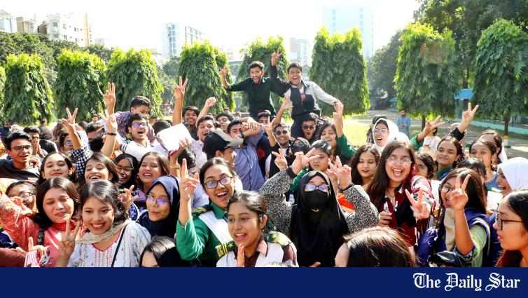
The pass rate in this year's HSC examinations has dropped to 75.90 percent from last year's 84.31, while the number of students with a GPA-5 has halved from last year's 1,59,755
Despite an overall decline in the pass rate for this year’s Higher Secondary Certificate (HSC) and equivalent examinations, the Madrasa Board has emerged as the top-performing board among all education boards
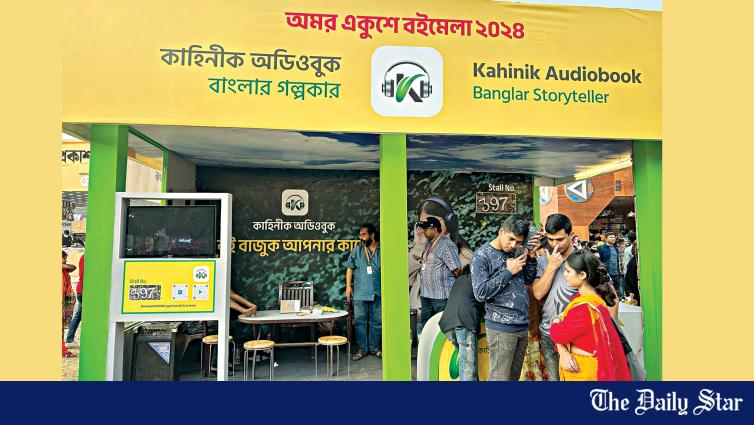
While taking a stroll at the Amar Ekushey Boi Mela yesterday, a voice narrating a passage from Bibhutibhushan Bandyopadhyay’s classic “Adarsha Hindu Hotel” grabbed this correspondent’s attention.
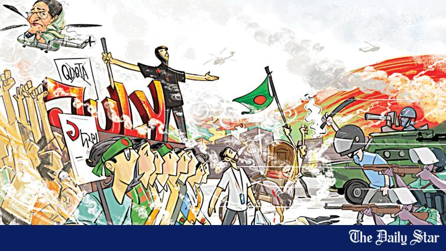
Both the previous government (Awami League) and opposition groups recruited, paid, and used children in violence during the July uprising, a United Nations Fact-Finding Mission has reported.

According to proposals by the Directorate of Secondary and Higher Education (DSHE), the projects will cover half of the 20,767 secondary and higher secondary educational institutions and be implemented between January 2027 and December 2031.
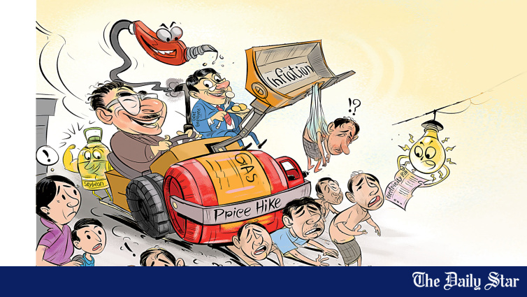
A series of price hikes leaves many families with no wiggle room
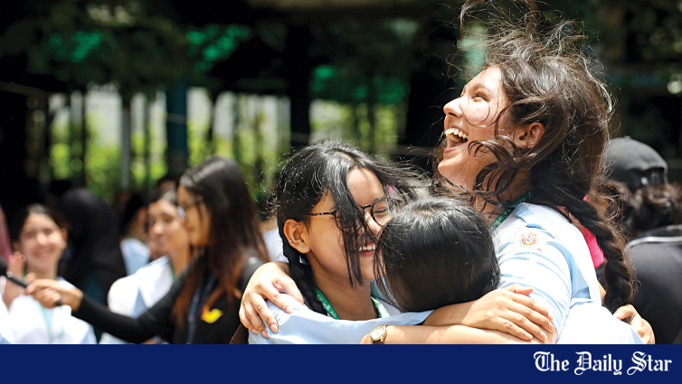
This year’s SSC results painted a grim picture, with the pass rate across the nine general education boards hitting a 19-year low and GPA-5 achievers falling to their lowest level since 2020.
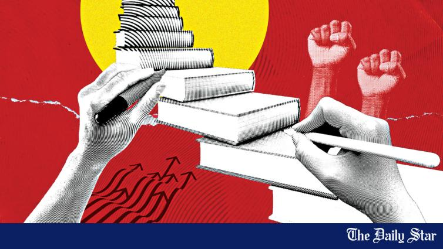
30 of 47 newly appointed VC had ties to teachers' groups linked with BNP or Jamaat
Deputy commissioners yesterday warned that the growing availability of drugs among youth, despite regular enforcement drives, poses a grave threat to the nation, urging the government to adopt tougher measures to curb the menace.
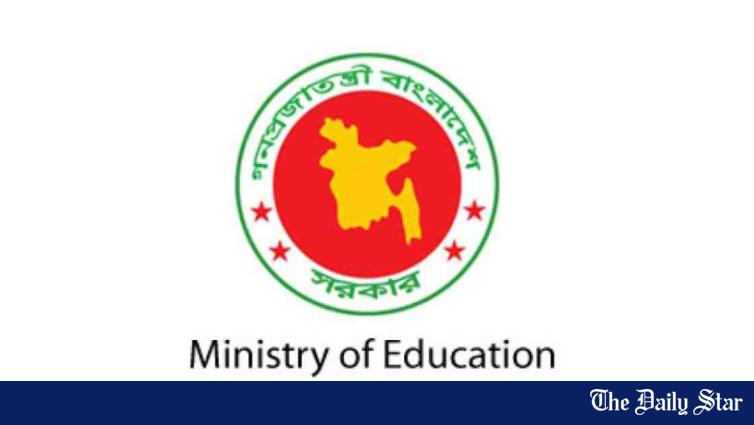
The government yesterday instructed all secondary educational institutions to deposit the admission fees collected from students with the state coffer.
Several public universities have lately been shaken by incidents in which teachers were harassed, confined to their offices, or even assaulted by student leaders over alleged links to the previous regime, with the authorities failing to prevent the recurrence of such untoward events.
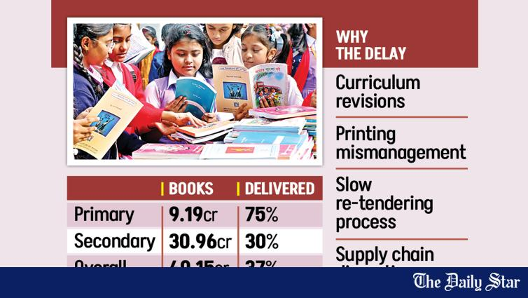
Only 37% of 40.15cr textbooks distributed till first half of Jan
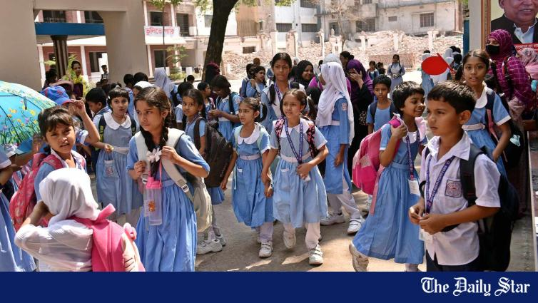
The month-long disruption to university education and two-week long closure of schools have led to the cancellation of public and school exams, upsetting academic calendars and hampering the education of crores of students.
All government primary schools have been asked to keep three books -- two on late president Ziaur Rahman, former prime minister Khaleda Zia, and one written by Prime Minister Tarique Rahman.
A journalism teacher at Begum Rokeya University, Mahmudul Haque now sits in jail